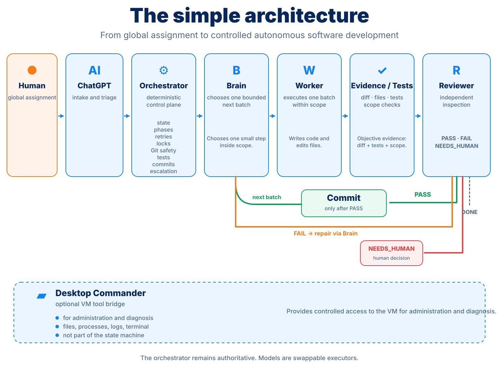
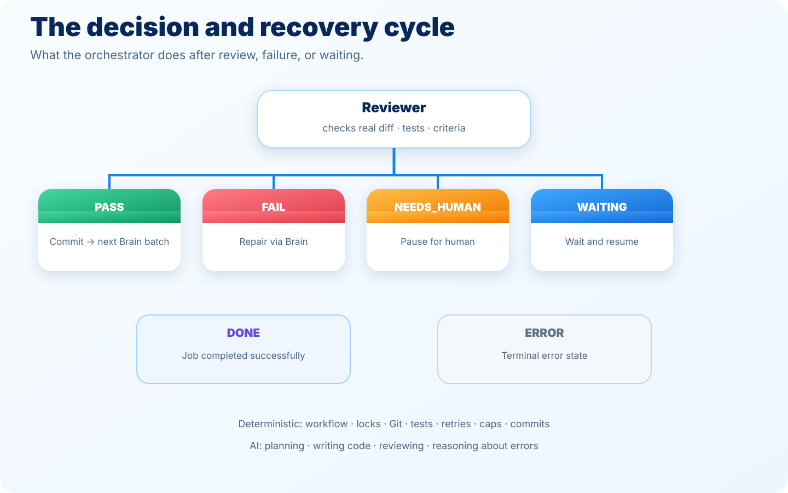
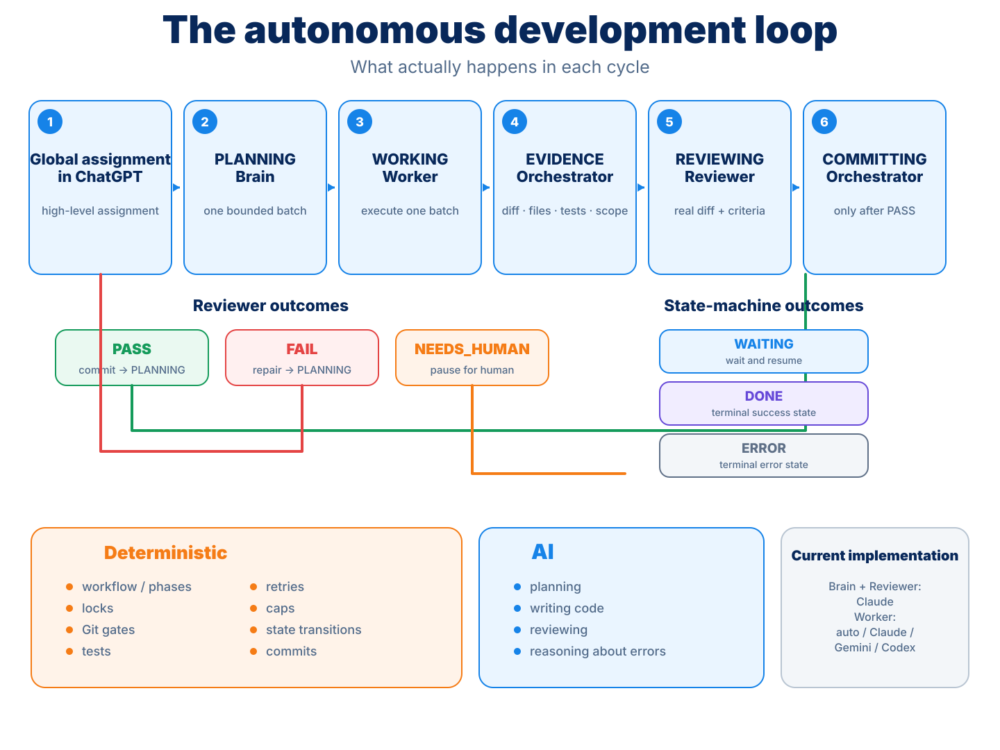

← Back to the overview · ← How can AI do this itself? (the concept, without the technical detail)
Under the hood: orchestrator, Hermes, models and Git
orchestrator
The orchestrator is the traffic controller: the program that splits the work into small, testable steps, has each step tested and independently checked, and only moves on once a step is genuinely good.Hermes
Hermes is the toolbox: the connection that lets the AI reach tools and models, a bridge between the orchestrator and the programs that do the actual work.Git
Git is the logbook: a system that saves every change to the code, so you can always read back exactly what was changed and when.The architecture: from conversation to commit
From a high-level assignment in ChatGPT to code, objective proof, independent review and a commit. The orchestrator owns the state machine and the control flow; Brain, Worker and Reviewer supply the AI reasoning within bounded roles.
Brain
The Brain is the AI role that picks one small, bounded piece of work (a "batch") from the assignment each time — the planning role in the loop.Worker
The worker is the AI that actually carries out one small piece of work: writing code, making changes, or setting up tests.Reviewer
The reviewer is the second, independent AI that checks the result against the acceptance criteria, separate from the AI that built it.acceptance criteria
The concrete, measurable requirements a solution must meet before it counts as 'done'.
| Deterministic control plane (orchestrator) | AI reasoning (Brain / Worker / Reviewer) |
|---|---|
| Workflow phases, locks and state transitions | Choosing the next bounded batch |
| Git safety, scope checks and commits | Writing or changing code |
| Running tests, collecting evidence, retries and caps | Reviewing the actual result and reasoning about repairs |
The workflow: plan, build, test, review, repair, record
This is the same loop as on How can AI do this itself?, but here with the exact roles: the Brain picked one bounded next batch, the Worker carried it out, the orchestrator collected objective evidence, and the Reviewer independently checked that evidence against the acceptance criteria. Only after a PASS did a commit follow — never based on a promise from the Worker itself.

Review, repair and completion
Tests, type checks, builds and, where possible, Playwright end-to-end tests determined whether a step could move on to the next phase. An AI that judges its own work misses things just as easily as a person proofreading their own text — that's why the Reviewer always checked the actual result, independent of the Worker that built it.


Hermes, the models and Git
Claude
Claude is the AI model family that did the reasoning work for the Brain and Reviewer role in this challenge, and as one of the possible providers for the Worker role.Every accepted batch got its own commit. That kept development reproducible, visible and recoverable: you can read back afterwards exactly what changed and when. Alongside the autonomous orchestrator, Desktop Commander also ran on the same VM: a separate tool bridge that let ChatGPT, only when explicitly asked, directly view and edit files, start or monitor processes and read logs — useful for management and diagnosis, but not part of the autonomous state-machine loop itself.
A concrete example in Git: the 3D Path Planner
You don't have to take our word for the architecture. For the 3D Path Planner, the build history can simply be read back. Every accepted step was recorded as a separate commit:
01-core-planner-and-scenes → 02-threejs-viewer-and-controls → 03-exploration-playback-and-drone-animation → 04-playwright-e2e-tests → 05-visual-polish-and-demo-readiness → 06-pwa-mobile-readiness → final audit and acceptance.
The numbers and the machine
This didn't run on a big cluster, but on an ordinary small VM.
| Component | Actual environment during the challenge |
|---|---|
| Compute | 2 vCPU, 3.7 GiB RAM, 2 GiB swap |
| Disk | 38 GB root volume, roughly 28 GB used during documentation |
| OS/kernel | Linux 7.0.0-29-generic x86_64 |
| Python | 3.14.4 |
| Node / npm | Node v24.21.0, npm 11.19.0 |
| Git | Git 2.53.0 |
| Browser testing | Playwright + headless Chromium, including software WebGL for 3D tests |
| AI tooling | Claude for Brain/Reviewer; Worker routable to Claude, Gemini 3.8 Flash or Codex; ChatGPT as entry point |
Sources and further reading
This page summarizes the architecture. The full, original technical explanation is on the original site:
| Challenge | Demo | Repository | Commits |
|---|---|---|---|
| Glimmerdash (maze game) | Play | Repo | Commits |
| MOSSE Object Tracker | Open | Repo | Commits |
| 2x2 Rubik Solver | Open | Repo | Commits |
| Electron Dose Lab | Open | Repo | Commits |
| 3D Path Planner | Open | Repo | Commits |
Want to try it yourself?
This page explains how it worked. The next step shows what it costs and how to set something like this up yourself.